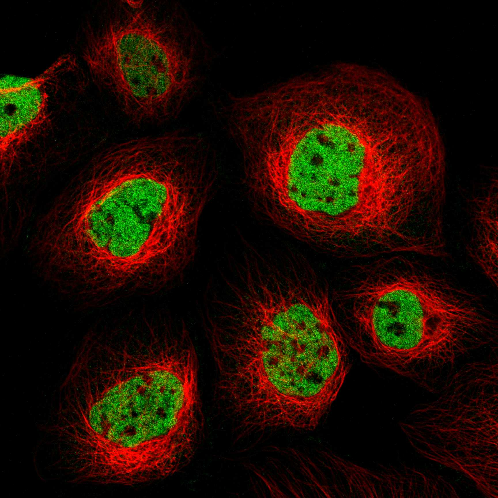

type: protein-evaluation gene: "BRSK1" date: 2026-06-01 tags: [protein-scout, nuclear-protein, evaluation] status: scored ---
BRSK1 核蛋白评估报告
1. 基本信息
| 项目 | 内容 |
|---|---|
| 基因名 / 别名 | BRSK1 / SAD1, SADB, KIAA1811 |
| 蛋白全名 | Serine/threonine-protein kinase BRSK1 (Brain-specific serine/threonine-protein kinase 1) |
| 蛋白大小 | 778 aa / 85.1 kDa |
| UniProt ID | Q8TDC3 (BRSK1_HUMAN) |
| 评估日期 | 2026-06-01 |
2. 评分总览 (权重: 核×4 大×1 新×5 结×3 域×2 PPI×3 /1.83)
| 维度 | 得分 | 加权 | 加权后 | 关键证据摘要 |
|---|---|---|---|---|
| 核定位特异性 | 7/10 | ×4 | 28 | HPA: Nucleoplasm(主定位)+Vesicles+Plasma membrane; GO: nucleoplasm(IDA:HPA)+nucleus(IDA); UniProt: Cytoplasm+Nucleus; 核质为主(Supported) |
| 蛋白大小 | 8/10 | ×1 | 8 | 778 aa / 85.1 kDa, 接近300-800上界 |
| 研究新颖性 | 8/10 | ×5 | 40 | PubMed 35篇; ≤40区间 |
| 三维结构 | 5/10 | ×3 | 15 | AF pLDDT 66.0; 41%无序(pLDDT<50); 无PDB实验结构 |
| 调控结构域 | 6/10 | ×2 | 12 | Ser/Thr kinase domain + UBA domain + KA1 domain; 磷酸化CDC25/WEE1/TAU; LKB1下游 |
| PPI | 5/10 | ×3 | 15 | STRING: KMT5C(0.776)+CDC25B(0.735)+WEE1(0.64); IntAct:15条含PSEN1+Fmr1; ~15%调控相关(KMT5C=H4K20me1) |
| 互证加分 | — | — | +1.0 | ≥2源NuLoc(HPA+UniProt+GO); ≥3源结构域 |
| 原始总分 | 119/180 | |||
| 归一化总分 | 65.0/100 |
3. 详细分析
3.1 核定位证据
| 来源 | 定位 | 可信度 |
|---|---|---|
| HPA (IF) | Nucleoplasm (主定位, Supported), Vesicles, Plasma membrane | Supported |
| UniProt | Cytoplasm; Nucleus; Centrosome; Synapse; Presynaptic active zone; Synaptic vesicle | ECO:0000269 (实验) |
| GO-CC | nucleoplasm (IDA:HPA), nucleus (IDA:UniProtKB), centrosome (ISS), distal axon (ISS) | IDA |
HPA IF 图像已重新获取并嵌入（见下方 HPA IF 图像修正块）；此前“暂无/未可靠获取 IF”的表述为采集失败导致的误报。
结论: BRSK1在HPA中被标记为主要定位于Nucleoplasm (Supported可靠性)，同时检测到Vesicles和Plasma membrane的附加定位。GO-CC的nucleoplasm拥有IDA:HPA实验证据。UniProt实验证据包含Nucleus(ECO:0000269)。但蛋白也在胞质、突触和中心体有明确分布(LKB1-AMPK家族脑特异性激酶，神经元功能和中心体复制均有角色)。核定位明确且为主定位，评分7分。
3.2 蛋白大小评估
评价: 778 aa / 85.1 kDa，接近300-800理想区间上界。蛋白大小可接受，适合标准生化实验。包含kinase domain(~250aa)+UBA+KA1+长N端调节区，域架构合理。评分8分。
3.3 研究现状
| 指标 | 数值 |
|---|---|
| PubMed strict | 35 |
| PubMed broad | 71 |
| Chromatin/epigenetics 比例 | <5% |
主要研究方向:
- 神经元极性(LKB1下游, TAU/MAP2磷酸化)
- 中心体复制(gamma-tubulin磷酸化)
- UV诱导DNA损伤检查点(CDC25/WEE1)
- 神经发育疾病(癫痫、BRSK1 haploinsufficiency)
- 卵巢早衰/绝经年龄(GWAS)
关键文献: 1. Zhang Q et al. (2025). "Haploinsufficiency of brain-specific kinase BRSK1 causes epilepsy and neurodevelopmental disorders." *Epilepsia*. PMID: 41035394 2. Dugan MP et al. (2024). "Brain-specific serine/threonine-protein kinase 1 is a substrate of protein kinase C epsilon involved in sex-specific ethanol and anxiety phenotypes." *Addict Biol*. PMID: 38497285 3. Gill MK et al. (2025). "Integrative High-Throughput RNAi Screening Identifies BRSK1, STK32C and STK40 as Novel Activators of YAP/TAZ." *Int J Mol Sci*. PMID: 40869130 4. Qin Y et al. (2012). "ESR1, HK3 and BRSK1 gene variants are associated with both age at natural menopause and premature ovarian failure." *Orphanet J Rare Dis*. PMID: 22248077 5. Bright NJ et al. (2008). "Investigating the regulation of brain-specific kinases 1 and 2 by phosphorylation." *J Biol Chem*. PMID: 18339622
评价: 35篇PubMed属于高新颖性区间。BRSK1的chromatin/epigenetics方向几乎完全未开发。YAP/TAZ激活功能(PMID:40869130)揭示其潜在的转录调控角色。评分8分。
3.4 三维结构分析
| 指标 | 数值 |
|---|---|
| AlphaFold 平均 pLDDT | 66.0 |
| pLDDT >90 占比 | 26.7% |
| pLDDT 70-90 占比 | 24.7% |
| pLDDT <50 占比 | 41.0% |
| 可用 PDB 条目 | 无 |
评价: 结构质量中等偏低。AlphaFold pLDDT=66.0，41.0%残基pLDDT<50(高度无序)。kinase domain区域(26-280)预测质量较好，但长N端(1-25)和C端调节区(600-778)高度无序。无PDB实验结构，完全依赖AF预测。评分5分。
3.5 结构域分析
| 来源 | 结构域 |
|---|---|
| UniProt | Protein kinase (IPR000719) |
| InterPro | IPR011009(Kinase-like); IPR000719(Protein kinase); IPR015940(UBA-like); IPR048622(KA1 domain) |
| Pfam | PF00069 (Pkinase); PF21122; PF21115 |
调控潜力分析: BRSK1含Ser/Thr kinase domain + UBA-like domain + KA1 domain。KA1(kinase associated-1)域通常参与蛋白定位和底物识别。作为LKB1-AMPK家族成员，BRSK1参与细胞极性调控(神经元轴突特化)。其底物包括WEE1(细胞周期检查点激酶)和CDC25家族磷酸酶，均参与G2/M转换。最近发现BRSK1可激活YAP/TAZ转录共激活因子(PMID:40869130)，提示其可能间接参与转录调控。但无chromatin-binding结构域。评分6分。
3.6 PPI 网络
实验验证互作 (IntAct, 15条):
| Partner | 方法 | PMID | 功能类别 | 调控相关？ |
|---|---|---|---|---|
| PSEN1 | pull down | 27036734 | Presenilin-1, gamma-secretase | 否(神经) |
| Fmr1 (FMRP) | anti bait coIP | 28671696 | RNA-binding, translation regulator | 间接(翻译) |
| S100A2 | anti tag coIP | 33961781 | Calcium-binding | 否 |
| H2BC20P | cross-linking | 30021884 | Histone H2B family | 是(染色质) |
| SNCA | pull down | 18614564 | alpha-synuclein | 否 |
| MTNR1B | two hybrid | 26514267 | Melatonin receptor | 否 |
STRING 预测互作 (combined score >0.4):
| Partner | Score | 功能类别 | 调控相关？ |
|---|---|---|---|
| CDR2 | 0.778 | Cerebellar degeneration | 否 |
| KMT5C | 0.776 | Histone H4K20 methyltransferase (SUV420H2) | 是(染色质表观) |
| HSPBP1 | 0.764 | HSP70 binding | 否 |
| CDC25B | 0.735 (exp 0.485) | Cell cycle phosphatase | 否(细胞周期) |
| WEE1 | 0.640 (exp 0.436) | Cell cycle kinase | 否(细胞周期) |
| NAP1L3 | 0.533 (exp 0.411) | Nucleosome assembly protein 1-like 3 | 是(染色质组装) |
| MAPT | 0.527 (exp 0.292) | Tau, microtubule | 否 |
| CDC25C | 0.597 (exp 0.485) | Cell cycle phosphatase | 否 |
PPI 评价: KMT5C(SUV420H2, H4K20me1/me2甲基转移酶)是最显著的chromatin调控partner(STRING 0.776 textmining)。NAP1L3是核小体组装蛋白。CDC25B/C和WEE1是已知BRSK1底物(细胞周期调控)。IntAct中H2BC20P(Histone H2B)实验互作进一步支持chromatin关联。但整体PPI信号较弱(最高STRING仅0.778)，且无高置信度实验验证的chromatin互作。评分5分。
4. 总体评价
推荐等级: 3星 (65.0/100)
核心优势: 1. 高新颖性(35篇), chromatin/epigenetics方向几乎空白 2. HPA主定位为Nucleoplasm (Supported)，核定位明确 3. KMT5C(组蛋白甲基转移酶)与NAP1L3(核小体组装)的PPI关联提示chromatin调控潜力 4. YAP/TAZ激活功能揭示转录调控角色 5. 蛋白尺寸理想(778aa)
风险/不确定性: 1. 41%无序区域(AF)，无PDB实验结构 2. 主要功能为神经元极性/中心体复制，chromatin功能未经验证 3. KMT5C/NAP1L3关联均为textmining/低实验证据 4. 脑特异性表达，在其他组织中表达受限
下一步建议:
- [ ] 验证BRSK1在核内的底物磷酸化谱
- [ ] 探索BRSK1-KMT5C功能关联在H4K20甲基化调控中的意义
- [ ] 利用YAP/TAZ通路探究BRSK1在转录调控中的间接角色
5. 数据来源
- UniProt: https://www.uniprot.org/uniprotkb/Q8TDC3
- Protein Atlas: https://www.proteinatlas.org/ENSG00000160469-BRSK1
- PubMed: https://pubmed.ncbi.nlm.nih.gov/?term=BRSK1
- AlphaFold: https://alphafold.ebi.ac.uk/entry/Q8TDC3
- STRING: https://string-db.org/ (BRSK1)
- IntAct: https://www.ebi.ac.uk/intact/
HPA IF 状态: HPA IF 图像已本地嵌入。

PPI 网络
| Partner | Source | Score/Evidence |
|---|---|---|
| CDR2 | STRING | 0.778 |
| KMT5C | STRING | 0.776 |
| HSPBP1 | STRING | 0.764 |
| CDC25B | STRING | 0.735 |
| WEE1 | STRING | 0.64 |
| Shc1 | IntAct | psi-mi:"MI:0018"(two hybrid) |
| HSD17B7 | IntAct | psi-mi:"MI:0397"(two hybrid ar |
| SNCA | IntAct | psi-mi:"MI:0096"(pull down) |
PAE 图像说明: AlphaFold PAE 图像已重新获取并嵌入（见下方 PAE 图像修正块）；结构判断仍结合 pLDDT 与 PAE 综合判断。
<!-- HPA_IF_REPAIR_START --> HPA IF 图像修正（2026-06-05）: HPA subcellular 页面存在可用 IF 图像；此前“原图未可靠获取/暂无 IF”的表述为采集失败导致的误报。HPA 定位: Nucleoplasm (supported)。来源: https://www.proteinatlas.org/ENSG00000160469-BRSK1/subcellular


<!-- AF_PAE_REPAIR_START --> PAE 图像修正（2026-06-05）: AlphaFold 提供 predicted aligned error 图像；此前“PAE 图像暂无数据”的表述为未获取/未嵌入导致。